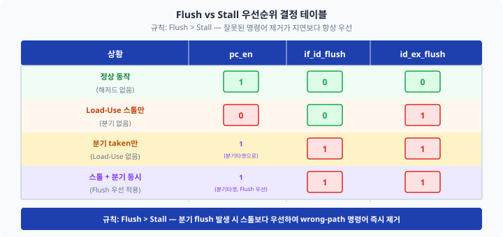
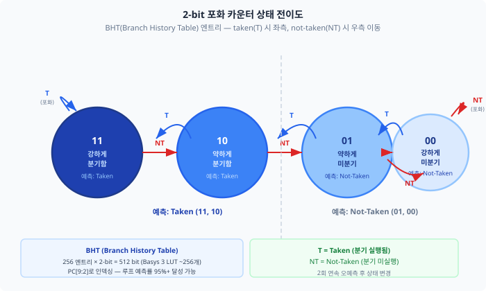
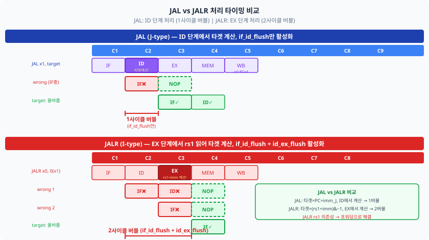

Ch10에서 데이터 해저드를 완전히 해결하였습니다. 포워딩 유닛과 해저드 감지 유닛 덕분에
RAW 의존성과 Load-Use 스톨을 하드웨어가 자동으로 처리합니다.
이제 마지막 해저드 — 제어 해저드(control hazard)를 다룰 차례입니다.
분기(branch) 명령어와 점프(jump) 명령어는 PC가 어디로 이동해야 하는지를
명령어 실행 도중에야 알 수 있기 때문에, 파이프라인이 잘못된 경로의 명령어를
미리 가져오는 상황이 발생합니다. 이 챕터에서는 그 문제를 정의하고,
EX 스테이지에서 분기를 판정하는 메커니즘과 플러시(flush) 제어 신호를 설계하며,
Ch09에서 예약해 둔 if_id_flush 포트를 드디어 완전히 연결합니다.
Ch09에서 분기 명령어를 제외했던 이유를 기억하십니까? "아직 분기를 처리할 수 없으니 NOP으로 채워 두겠다"고 했습니다.
Ch10에서는 데이터 해저드를 해결했지만, 분기는 여전히 미완성이었습니다.
이제 그 숙제를 마무리할 시간입니다.
교차로 신호등을 생각해 보십시오. 차가 교차로에 진입한 순간, 신호등이 빨간불로 바뀔지 초록불을 유지할지
아직 모르는 상태에서 이미 직진 차선에 들어온 상황입니다. 파이프라인도 마찬가지입니다.
BEQ 명령어가 IF → ID → EX를 진행하는 동안, 다음 명령어 2개가 이미 파이프라인에
들어와 있습니다. EX에서 "분기 실행"으로 판정이 나면, 그 2개의 명령어는 전부 잘못된 경로의 것입니다.
이것이 제어 해저드(control hazard, 제어 위험)입니다.
11.1 제어 해저드의 발생 원인
Ch10에서 데이터 해저드를 해결했습니다. 이제 마지막 해저드 — 제어 해저드(control hazard)입니다.
데이터 해저드가 "값이 아직 준비되지 않은 문제"라면,
제어 해저드는 "PC가 어디로 가야 하는지 모르는 문제"입니다.
파이프라인은 미래를 모른다
5단 파이프라인은 매 사이클마다 새 명령어를 IF 스테이지에서 인출합니다.
BEQ x1, x0, label 명령어가 IF 스테이지를 통과할 때,
파이프라인은 다음 PC가 PC+4인지 label인지 전혀 알지 못합니다.
그래서 일단 PC+4의 명령어를 가져옵니다. 그리고 그 다음 사이클에도
또 PC+4+4의 명령어를 가져옵니다.
BEQ가 드디어 EX 스테이지에 도달하면, 포워딩된 rs1과 rs2를 비교하여
"분기 실행(taken)" 혹은 "분기 미실행(not-taken)"을 결정합니다.
만약 "taken"이라면, 이미 IF/ID에 들어와 있던 명령어 2개는
틀린 경로(wrong-path)의 명령어입니다. 이들을 즉시 제거해야 합니다.
그림 11.1: BEQ 명령어 실행 시 제어 해저드 발생. BEQ가 EX(C4)에서 판정을 완료하기 전에 wrong-path 명령어 2개가 IF(C3)와 ID(C4)에 진입합니다. 판정 후 flush하여 NOP으로 대체합니다.
분기 판정 단계별 페널티 비교
분기 결과를 어느 스테이지에서 판정하느냐에 따라 파이프라인에 삽입해야 하는
버블(bubble, 거품)의 수가 달라집니다.
버블이란 NOP 명령어처럼 아무 효과 없이 파이프라인을 통과하는 빈 슬롯을 의미합니다.
판정 단계
버블 수
장점
단점
WB (5단계)
4사이클
구현 단순
CPI 페널티 최대
MEM (4단계)
3사이클
Ch09의 접근법
여전히 높은 페널티
EX (3단계) ← 우리의 선택
2사이클
포워딩과 자연스럽게 통합
branch_unit 추가 필요
ID (2단계)
1사이클
페널티 최소
포워딩 의존성 처리 복잡
제어 해저드가 데이터 해저드와 다른 점
데이터 해저드는 포워딩으로 페널티를 완전히 제거하거나(RAW),
1사이클 스톨로 최소화(Load-Use)할 수 있었습니다.
반면 제어 해저드는 분기 결과를 알기 전에는 어떤 명령어가 올바른지 알 방법이 없으므로,
분기가 taken이면 반드시 버블이 발생합니다.
하드웨어가 할 수 있는 최선은 (1) 판정 단계를 앞당기거나 (2) 예측 전략으로 페널티 확률을 낮추는 것입니다.
11.4절과 11.5절에서 이 전략들을 다룹니다.
11.2 분기 결과를 EX 스테이지에서 처리
Ch09에서는 branch_taken을 MEM 스테이지에서 판정했습니다(3사이클 페널티).
이제 EX 스테이지로 이동하여 페널티를 2사이클로 줄입니다.
이를 위해 새로운 서브모듈 branch_unit을 설계합니다.
왜 zero 신호만으로는 부족한가?
Ch08과 Ch09의 단일 사이클 / 기본 파이프라인에서는 BEQ만 처리하면 충분했습니다.
ALU의 zero 출력(두 오퍼랜드가 같으면 1)으로 BEQ 조건을 판별했습니다.
그러나 RV32I에는 6가지 분기 명령어가 있습니다:
BEQ(같으면), BNE(다르면), BLT(부호 있는 작으면), BGE(부호 있는 크거나 같으면),
BLTU(부호 없는 작으면), BGEU(부호 없는 크거나 같으면).
zero 신호 하나로는 이 6가지를 모두 처리할 수 없습니다.
branch_unit 모듈 설계
branch_unit은 포워딩된 rs1, rs2 값을 직접 받아 funct3 코드에 따라
6가지 조건 중 하나를 평가합니다. 분기 명령어임을 나타내는 branch 신호가 1일 때만
branch_taken을 출력합니다.
이 모듈의 핵심은 포워딩된 값을 직접 사용한다는 점입니다.
alu_src_a(포워딩 MUX A 출력)와 fwd_b_data(포워딩 MUX B 출력)를
branch_unit의 입력으로 연결합니다.
따라서 직전 명령어가 ADD이든 LW이든(단, load는 Ch10의 스톨이 처리하므로 안전),
branch_unit은 항상 올바른 최신 값으로 조건을 평가합니다.
그림 11.2: EX 스테이지 분기 판정 데이터패스. branch_unit이 포워딩 MUX 출력을 직접 받아 branch_taken_ex를 생성합니다. pc_next MUX는 4가지 소스 중 하나를 선택합니다.
EX 판정의 2사이클 페널티
BEQ가 C4(EX)에 있을 때, 파이프라인에는 이미 C3(EX보다 1사이클 이전)에 wrong-path 명령어 하나가
ID에 들어와 있고, C4에는 또 다른 wrong-path 명령어가 IF에 들어옵니다.
branch_taken_ex가 1이 되는 순간(C4 조합 논리), 이 두 개의 wrong-path 명령어를
NOP으로 대체(flush)해야 합니다.
결국 C5 이후부터 올바른 경로의 명령어가 IF 스테이지에서 시작되므로,
2사이클의 버블이 불가피합니다.
분기 타겟 주소 계산
분기 타겟은 id_ex_pc + id_ex_imm입니다.
imm_gen이 B-type 즉치수를 이미 sign-extended 32비트로 추출하여 ID/EX 레지스터
id_ex_imm에 저장했으므로, EX 스테이지에서는 단순 덧셈만 하면 됩니다.
11.3 Flush 메커니즘 설계
컨베이어벨트에 잘못된 재료가 올라왔습니다. 이미 다음 공정으로 넘어가기 직전입니다.
가장 빠른 해결책은 그 재료를 꺼내어 "빈 받침대"로 교체하는 것입니다.
파이프라인에서는 wrong-path 명령어를 NOP(32'h0000_0013, addi x0,x0,0)으로
교체하는 작업이 이에 해당합니다. 이것이 플러시(flush)입니다.
Flush vs Stall 개념 비교
Ch10에서 Load-Use 스톨을 구현할 때 id_ex_flush를 사용했습니다.
그 신호는 "버블을 삽입하라"는 의미였고, 이번에도 같은 신호 이름을 확장합니다.
두 개념의 차이를 명확히 정리하겠습니다.
구분
Flush (플러시)
Stall (스톨)
동작
파이프라인 레지스터를 NOP으로 덮어씀
파이프라인 레지스터를 현재 값 그대로 유지
PC 동작
새 타겟으로 즉시 갱신 (pc_en=1)
현재 PC 홀드 (pc_en=0)
사용 상황
분기 taken, JAL, JALR
Load-Use 해저드
기존 Ch10 구현
id_ex_flush=stall (NOP 역할)
pc_en=0, if_id_en=0
if_id_flush 구현
Ch09에서 if_id_flush=0으로 고정해 두었던 포트를 이제 연결합니다.
분기 taken, JAL, JALR 중 하나라도 발생하면 IF/ID 레지스터를 NOP으로 교체합니다.
// IF/ID 파이프라인 레지스터 — flush 우선순위 적용
always_ff @(posedge clk or negedge rst_n) begin
if (!rst_n || if_id_flush) begin
// 리셋 또는 플러시 → NOP 삽입
if_id_instr <= 32'h0000_0013; // NOP
if_id_pc <= 32'b0;
if_id_pc_plus4 <= 32'b0;
end
else if (if_id_en) begin // 스톨 시 홀드
if_id_instr <= instr;
if_id_pc <= pc;
if_id_pc_plus4 <= pc_plus4;
end
end
id_ex_flush 확장
Ch10에서 id_ex_flush는 Load-Use 스톨 시에만 활성화되었습니다.
Ch11에서는 분기 taken과 JALR(EX 처리) 상황도 포함합니다.
load_use_stall은 hazard_detection_unit의 출력이고, 나머지는 제어 해저드 신호입니다.
// 플러시/스톨 통합 제어
assign if_id_flush = branch_taken_ex | jal_id | jalr_taken_ex;
assign id_ex_flush = load_use_stall | branch_taken_ex | jalr_taken_ex;
// pc_en: 스톨이지만 flush 발생 시 flush 우선 (PC 갱신 허용)
assign pc_en = if_id_flush ? 1'b1 : hdu_pc_en;
그림 11.3: 분기 taken 시 IF/ID와 ID/EX 플러시 동작. C4에서 branch_taken_ex=1이 되면, 동일 클록 에지에서 if_id_flush와 id_ex_flush가 활성화됩니다. C5 이후 두 레지스터는 NOP 내용을 갖고, PC는 분기 타겟으로 변경됩니다.
Flush vs Stall 우선순위 규칙
Load-Use 스톨 도중 분기 taken이 발생하는 극단적인 상황을 생각해 보겠습니다.
이 경우 어떤 신호가 우선해야 할까요?

그림 11.4: Flush vs Stall 우선순위 결정 테이블. 규칙: Flush > Stall.
세 신호 최종 정리
11.3절에서 다룬 세 가지 핵심 제어 신호를 최종 정리합니다.
신호
활성화 조건
역할
if_id_flush
branch_taken_ex | jal_id | jalr_taken_ex
IF/ID 레지스터를 NOP으로 교체
id_ex_flush
load_use_stall | branch_taken_ex | jalr_taken_ex
ID/EX 레지스터를 NOP으로 교체 (버블 삽입)
pc_en
if_id_flush ? 1 : hdu_pc_en
flush 시 PC 강제 갱신 (스톨 오버라이드)
11.4 정적 분기 예측: Predict-Not-Taken
11.3절까지 구현한 내용을 정리하면, 분기 taken 시 반드시 2사이클 페널티가 발생합니다.
그런데 이 메커니즘 자체가 이미 하나의 분기 예측(branch prediction) 전략을 구현하고 있습니다.
바로 Predict-Not-Taken(미분기 예측)입니다.
Predict-Not-Taken 전략이란?
Predict-Not-Taken이란 "분기 명령어를 만났을 때, 항상 분기가 실행되지 않을 것이라고 예측한다"는 전략입니다.
다시 말해, 파이프라인은 항상 PC+4를 다음 명령어로 가져옵니다.
분기 결과가 EX에서 나왔을 때:
예측 성공 (not-taken): 이미 가져온 명령어들이 올바름. 페널티 없음.
예측 실패 (taken): 이미 가져온 명령어들이 틀림. 2사이클 flush 후 올바른 경로 재개.
그림 11.5: Predict-Not-Taken 전략. 위: not-taken 시 페널티 0사이클. 아래: taken 시 2사이클 페널티.
CPI 영향 계산
분기 명령어 비율과 taken 비율을 알면 CPI에 미치는 영향을 정량적으로 계산할 수 있습니다.
CPI = 1 + (분기 비율 × taken 비율 × 페널티 사이클)
예를 들어, 전체 명령어 중 분기 명령어가 20%이고, 분기의 60%가 taken이라면:
CPI = 1 + 0.20 × 0.60 × 2 = 1.24
이는 포워딩만 구현했을 때의 이상적 CPI 1.0보다 24% 높지만,
분기 판정을 MEM(3사이클 페널티)에서 할 때의 CPI 1.36보다 훨씬 낮습니다.
11.5 동적 분기 예측 (선택 구현)
Predict-Not-Taken은 루프처럼 taken 비율이 높은 경우 효율이 낮습니다.
동적 분기 예측(dynamic branch prediction)은 과거의 분기 이력을 기록하여
다음 분기 결과를 예측합니다. 루프처럼 패턴이 반복되는 경우 예측률을 크게 높일 수 있습니다.
2-bit 포화 카운터
가장 널리 쓰이는 동적 예측 방식은 2-bit 포화 카운터(2-bit saturating counter)입니다.
각 분기 명령어마다 2비트 상태를 유지하며, taken 시 증가, not-taken 시 감소합니다.
상태는 00(강한 미분기), 01(약한 미분기), 10(약한 분기), 11(강한 분기) 4가지입니다.
1-bit 카운터는 TNTNT 패턴에서 매번 오예측이 발생하지만,
2-bit 카운터는 2회 연속 오예측이 있어야 상태가 반전됩니다.
이 "관성"이 루프처럼 규칙적인 패턴에서 큰 도움이 됩니다.

그림 11.6: 2-bit 포화 카운터 상태 전이도. taken(T) 시 왼쪽으로, not-taken(NT) 시 오른쪽으로 이동합니다. 11, 10은 Taken 예측, 01, 00은 Not-Taken 예측입니다.
BHT — Branch History Table
BHT(Branch History Table, 분기 이력 테이블)은 2-bit 포화 카운터 배열입니다.
PC의 하위 비트로 인덱싱하여 해당 분기의 최근 이력을 조회합니다.
// BHT 예측기 — 256 엔트리, 2-bit 포화 카운터
module bht_predictor (
input logic clk,
input logic rst_n,
// 예측 인터페이스 (IF 스테이지)
input logic [7:0] pred_idx, // PC[9:2]로 인덱싱
output logic pred_taken, // 예측 결과 (1=taken)
// 업데이트 인터페이스 (EX 스테이지)
input logic [7:0] upd_idx,
input logic upd_taken,
input logic upd_valid
);
logic [1:0] counter [255:0]; // 256 엔트리 × 2-bit
// 예측: 상위 비트가 1이면 taken 예측
assign pred_taken = counter[pred_idx][1];
// 업데이트: EX에서 실제 결과로 카운터 갱신
always_ff @(posedge clk or negedge rst_n) begin
if (!rst_n) begin
for (int i = 0; i < 256; i++)
counter[i] <= 2'b01; // 초기값: 약한 미분기
end
else if (upd_valid) begin
if (upd_taken && counter[upd_idx] != 2'b11)
counter[upd_idx] <= counter[upd_idx] + 1; // 증가 (포화)
else if (!upd_taken && counter[upd_idx] != 2'b00)
counter[upd_idx] <= counter[upd_idx] - 1; // 감소 (포화)
end
end
endmodule
성능 비교: PNT vs BHT
전략
루프 10회 (BNE 9회 taken)
페널티 총합
구현 복잡도
Predict-Not-Taken
9회 오예측 × 2사이클
18사이클
추가 하드웨어 불필요
BHT 2-bit
첫 반복 + 루프 탈출 시 2회 오예측
4사이클
256×2-bit 레지스터 추가
11.6 JAL/JALR 처리
분기 명령어 외에도 JAL과 JALR이 PC를 변경합니다.
두 명령어 모두 링크 레지스터(rd)에 PC+4를 저장하고 새 주소로 점프하지만,
타겟 주소를 계산하는 방법과 파이프라인에서 처리하는 단계가 다릅니다.
비유하자면: JAL은 "지도를 보지 않아도 목적지가 정해진 절대적 경로 변경"입니다.
즉치수와 PC만 있으면 ID 단계에서 바로 타겟을 계산할 수 있습니다.
JALR은 "rs1 레지스터의 값을 읽어야만 목적지를 알 수 있는 조건적 경로 변경"입니다.
rs1 값은 EX 단계에서야 포워딩을 통해 확정되므로, EX에서 처리해야 합니다.

그림 11.7: JAL (위)은 ID 단계에서 타겟 계산, 1사이클 버블. JALR (아래)은 EX 단계에서 타겟 계산, 2사이클 버블.
JAL 처리 — ID 단계에서 즉시 결정
JAL(Jump And Link)은 opcode 7'b1101111, J-type 즉치수를 사용합니다.
J-type 즉치수 추출은 비트 재배열이 필요합니다:
버블은 IF 스테이지에 있던 wrong-path 명령어 1개뿐입니다.
ID 스테이지에 있는 것은 JAL 자신이므로 flush하면 안 됩니다.
따라서 if_id_flush만, id_ex_flush 없음이 JAL의 규칙입니다.
JALR 처리 — EX 단계에서 rs1 읽기 후 결정
JALR(Jump And Link Register)은 opcode 7'b1100111, I-type 즉치수를 사용합니다.
타겟 주소는 (rs1 + imm_I) & ~1입니다. 하위 1비트를 0으로 강제하는 것은
RISC-V 스펙의 요구 사항입니다.
assign jalr_taken_ex = id_ex_jalr; // JALR은 항상 taken
assign jalr_target = (alu_src_a + id_ex_imm) & ~32'h1;
// alu_src_a: 포워딩 MUX 출력 (rs1의 최신 값)
여기서 id_ex_jalr은 디코더가 JALR opcode(7'b1100111)를 감지하여
생성한 제어 신호가 ID/EX 파이프라인 레지스터를 통해 EX 스테이지로 전달된 신호입니다.
즉, 디코더 → 제어 신호 → ID/EX 레지스터 → EX 스테이지의 경로를 따릅니다.
JALR은 EX 단계에서 처리되므로 분기와 마찬가지로 2사이클 버블이 발생합니다.
if_id_flush와 id_ex_flush 모두 활성화됩니다.
Load-JALR 해저드
새로운 해저드처럼 보이지만, 이 경우도 기존 hazard_detection_unit이 자동으로 처리합니다.
추가 하드웨어 없이 Ch10의 설계 그대로 동작합니다.
LW x1, 0(x0) 다음에 JALR x0, 0(x1)이 오면,
JALR의 rs1(=x1)이 LW의 결과에 의존합니다.
Ch10에서 설계한 hazard_detection_unit은 if_id_rs1도 확인하므로,
JALR이 ID 스테이지에 있을 때 LW가 ID/EX에 있으면 자동으로 1사이클 스톨이 삽입됩니다.
스톨 후 MEM-EX 포워딩으로 값이 전달되고, JALR은 EX 단계에서 정확한 rs1 값을 사용합니다.
11.7 제어 해저드 테스트벤치
★★★ 대성취의 순간입니다. Ch09에서 분기 명령어를 제외했던 이유를 기억하십니까?
"아직 제어 해저드를 처리하지 못하기 때문"이었습니다.
드디어 모든 준비가 갖춰졌습니다. 분기 명령어가 포함된 루프 프로그램을
파이프라인 프로세서에서 실행해 봅시다.
루프 마일스톤 프로그램
1부터 10까지의 합(55)을 BNE 루프로 계산하는 프로그램입니다.
이 프로그램은 데이터 해저드(포워딩), 제어 해저드(flush)가 모두 발생합니다.
제어 해저드: 분기/점프 명령어로 인해 PC가 어디로 가야 하는지 모르는 상황.
파이프라인은 결과를 알기 전에 이미 wrong-path 명령어를 가져옵니다.
EX 단계 판정: branch_unit을 EX에 배치하여 2사이클 페널티를 달성합니다.
포워딩 유닛과 자연스럽게 통합됩니다.
Flush 메커니즘: if_id_flush와 id_ex_flush로 wrong-path 명령어를 NOP으로 교체합니다.
규칙: Flush > Stall — flush 발생 시 PC는 새 타겟으로 즉시 갱신합니다.
Predict-Not-Taken: 추가 하드웨어 없이 flush 메커니즘에 내장됩니다.
분기 not-taken 시 페널티 0, taken 시 2사이클.
JAL vs JALR: JAL은 ID 단계 처리(1사이클 버블, if_id_flush만),
JALR은 EX 단계 처리(2사이클 버블, if_id_flush+id_ex_flush).
루프 마일스톤: BNE 포함 1~10 합산 루프 실행, x2=55 검증.
9회 flush, 1회 no-flush. 파이프라인 완성도 ★★★.
자가 점검 질문
BEQ가 EX 단계에서 not-taken으로 판정되면 파이프라인에서 무슨 일이 일어납니까?
if_id_flush와 id_ex_flush가 동시에 활성화되는 상황을 두 가지 이상 나열하십시오.
Load-JALR 시퀀스에서 하드웨어가 자동으로 처리하는 과정을 스테이지 별로 설명하십시오.
BHT 2-bit 포화 카운터에서 TNTNT 패턴이 들어올 때 상태 전이 순서를 쓰십시오.
JAL의 rd 레지스터에 PC+4가 저장되는 파이프라인 단계는 어디입니까? 이유는?
다음 단계 — Ch12: 구조적 해저드와 파이프라인 완성
이제 5단 파이프라인의 두 해저드 — 데이터 해저드(Ch10)와 제어 해저드(Ch11) — 를 모두 해결했습니다.
Ch12에서는 마지막 해저드인 구조적 해저드(structural hazard)를 다룹니다.
Harvard 구조(명령어/데이터 메모리 분리)를 사용한 우리 설계에서는 사실 구조적 해저드가 거의 없습니다.
Ch12에서는 이를 확인하고, 단일 사이클 · 멀티사이클 · 파이프라인 세 가지 설계의
성능을 직접 비교하여 파이프라인 설계 여정을 마무리합니다.
"이미 아는 패턴"들의 조합 — 포워딩, 스톨, 플러시 — 으로 완전한 파이프라인이 만들어졌습니다.
Ch12의 성능 비교를 통해 여러분이 직접 만든 파이프라인이 단일 사이클보다
얼마나 빠른지 숫자로 확인하게 될 것입니다.
[응용] JALR 명령어가 LW x1, 4(x0)의 바로 다음에 오고,
JALR의 rs1=x1이라면 몇 사이클 스톨이 발생합니까? hazard_detection_unit의 조건식을 쓰십시오.
[분석] 루프 100회를 PNT와 BHT(2-bit) 전략으로 각각 실행할 때,
전체 페널티 사이클을 계산하십시오. 단, BHT 초기 상태는 "약한 미분기(01)"입니다.
[설계] if_id_flush와 id_ex_flush 신호를 추가한 후,
스톨(Load-Use)과 flush(BNE taken)가 같은 사이클에 동시 발생하는 시나리오를 테스트벤치로 작성하고
올바른 동작을 검증하십시오.
[도전] BHT 예측기(11.5절)를 rv32i_pipeline_branch에 통합하십시오.
예측 성공 시 flush 없이 진행하고, 예측 실패 시에만 flush가 발생하도록 pc_next MUX를 수정합니다.
루프 10회 반복 프로그램에서 페널티 사이클 수를 PNT와 비교하십시오.
전체 소스 코드
아래 코드는 이 챕터에서 다룬 모든 설계 파일의 전체 내용입니다.
지금 당장 모든 내용을 완전히 이해하지 않아도 괜찮습니다.
챕터를 진행하면서 각 부분을 다시 확인하는 참고 자료로 활용하십시오.
중요한 것은 개념을 이해하는 것이며, 코드는 그 개념을 표현하는 수단입니다.
ch11_branch_unit.sv — branch_unit 모듈
// ============================================================================
// branch_unit.sv
// Chapter 11 -- 제어 해저드와 분기 처리
// RISC-V 프로세서 설계 완전정복
// ============================================================================
// 6가지 분기 조건 평가 (BEQ/BNE/BLT/BGE/BLTU/BGEU)
// EX 스테이지에서 포워딩된 rs1, rs2 값으로 직접 비교
// ============================================================================
`timescale 1ns / 1ps
module branch_unit (
input logic [31:0] rs1_data, // 포워딩된 rs1 값
input logic [31:0] rs2_data, // 포워딩된 rs2 값
input logic [2:0] funct3, // 분기 조건 코드 (BEQ=000, BNE=001, ...)
input logic branch, // 분기 명령어 여부 (1 = branch 명령어)
output logic branch_taken // 분기 실행 여부 (1 = 분기 taken)
);
logic cond; // 분기 조건 평가 결과
always_comb begin
case (funct3)
3'b000: cond = (rs1_data == rs2_data); // BEQ
3'b001: cond = (rs1_data != rs2_data); // BNE
3'b100: cond = ($signed(rs1_data) < $signed(rs2_data)); // BLT
3'b101: cond = ($signed(rs1_data) >= $signed(rs2_data)); // BGE
3'b110: cond = (rs1_data < rs2_data); // BLTU
3'b111: cond = (rs1_data >= rs2_data); // BGEU
default: cond = 1'b0;
endcase
end
assign branch_taken = branch && cond;
endmodule
ch11_pipeline_with_branch.sv — 최종 파이프라인 (핵심 발췌)
// ============================================================================
// rv32i_pipeline_branch
// Ch10 rv32i_pipeline_forwarding 에 제어 해저드 처리 추가
// ============================================================================
// --- 제어 해저드 신호 선언 (Ch11 신규) ---
logic branch_taken_ex; // EX 분기 판정 결과
logic jal_id; // ID 단계 JAL 감지
logic jalr_taken_ex; // EX 단계 JALR 감지
logic if_id_flush; // IF/ID 플러시
logic id_ex_flush; // ID/EX 플러시 (load-use + branch + jalr)
// --- JAL J-type 즉치수 추출 ---
assign imm_J = {{12{if_id_instr[31]}},
if_id_instr[19:12],
if_id_instr[20],
if_id_instr[30:21],
1'b0};
assign jal_id = (if_id_instr[6:0] == 7'b1101111);
assign jal_target = if_id_pc + imm_J;
assign branch_target = id_ex_pc + id_ex_imm;
assign jalr_taken_ex = id_ex_jalr;
assign jalr_target = (alu_src_a + id_ex_imm) & ~32'h1;
// --- pc_next 4-way MUX ---
always_comb begin
priority if (branch_taken_ex) pc_next = branch_target;
else if (jalr_taken_ex) pc_next = jalr_target;
else if (jal_id) pc_next = jal_target;
else pc_next = pc_plus4;
end
// --- Flush/Stall 통합 제어 ---
assign if_id_flush = branch_taken_ex | jal_id | jalr_taken_ex;
assign id_ex_flush = load_use_stall | branch_taken_ex | jalr_taken_ex;
assign pc_en = if_id_flush ? 1'b1 : hdu_pc_en; // Flush > Stall
// --- branch_unit 인스턴스 ---
branch_unit u_branch (
.rs1_data (alu_src_a),
.rs2_data (fwd_b_data),
.funct3 (id_ex_funct3),
.branch (id_ex_branch),
.branch_taken(branch_taken_ex)
);